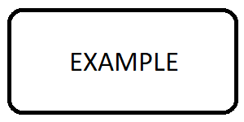

Specifications
Specification With Image
rst:
.. spec:: SWA_example_abc
:refs: SMD_example_xy
:asil: ASIL_A
:tags: integrity, covered, tested
:verification_criteria: Do carefully abc...
Example SWA content...
.. image:: ../_static/example.png
Please look at :ref:`SMD_example_xy`.
html:
|
Asil: ASIL_A | Cal: not_set | Upstream Asil: - | Upstream Cal: - |
Example SWA content… Please look at xy. |
Unit With Source File
rst:
.. unit:: SMD_example_xy
:sources: ../_static/module1/include/source2.h
:asil: ASIL_A
:tags: integrity, covered, tested
This unit does xy.
html:
|
Asil: ASIL_A | Cal: not_set | Upstream Asil: ASIL_A | Upstream Cal: not_set |
This unit does xy. |
Invalid Specification
rst:
.. unit:: SMD_example_inv
:status: invalid
*invalid* and *rejected* specifications are struck through.
html:
|
Asil: not_set | Cal: not_set | Upstream Asil: - | Upstream Cal: - |
invalid and rejected specifications are struck through. |
Information
rst:
.. information:: Input_example_info
Some information.
html:
|
Asil: not_set | Cal: not_set |
Some information. |
Requirement Derivation
rst:
.. requirement:: Customer_DeriveParent_1
:category: input
:asil: ASIL_B
:feature: F1
:refs: SRS_DeriveParent_1
:developer: Abc AG
:status: valid
:review_status: accepted
Generated by Dim.
.. requirement:: SRS_DeriveParent_1
:refs: SWA_DeriveParent_1
:asil: ASIL_C
:category: software
:developer: Abc AG
:status: valid
Generated by Dim.
.. srs:: SRS_DeriveParent_2
:refs: SWA_DeriveParent_1
:asil: ASIL_D
Self-written in RST.
.. spec:: SWA_DeriveParent_1
:status: valid
:refs: SMD_DeriveParent_1
Self-written in RST.
"Upstream Asil" only from direct parent, "Derived Feature" from complete tree.
.. unit:: SMD_DeriveParent_1
:status: valid
:sources: ../_static/module1/include/source2.h
The unit description.
html:
|
Asil: ASIL_B | Cal: not_set |
Generated by Dim. |
|
Asil: ASIL_C | Cal: not_set | Upstream Asil: ASIL_B | Upstream Cal: not_set |
Generated by Dim. |
|
Asil: ASIL_D | Cal: not_set | Upstream Asil: - | Upstream Cal: - |
Self-written in RST. |
|
Asil: not_set | Cal: not_set | Upstream Asil: ASIL_C, ASIL_D | Upstream Cal: not_set |
Self-written in RST. “Upstream Asil” only from direct parent, “Derived Feature” from complete tree. |
|
Asil: not_set | Cal: not_set | Upstream Asil: not_set | Upstream Cal: not_set |
The unit description. |
Modules
rst:
.. mod:: SWA_mod_module1
:location: pages/_static/module1
:reuse: yes
:usage: production
:developer: Abc AG
:status: valid
Best module ever.
.. mod:: SWA_mod_module2
:location: pages/_static/module2
:reuse: no
:usage: production
:developer: Supplier X
Does this and that.
html:
|
Asil: not_set | Cal: not_set | Reuse: yes | Usage: production | Upstream Asil: - | Upstream Cal: - |
Best module ever. |
|
Asil: not_set | Cal: not_set | Reuse: no | Usage: production | Upstream Asil: - | Upstream Cal: - |
Does this and that. |